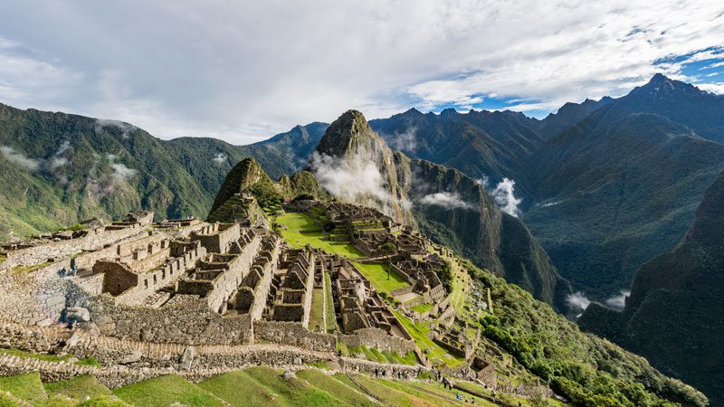

Top 5 Hiking Trails
Discover the most breathtaking hiking trails around the world:
-
Grand Canyon, USA

The Grand Canyon offers a variety of trails ranging from easy walks along the rim to challenging descents into the canyon itself. The Bright Angel Trail and South Kaibab Trail are popular choices for experiencing the stunning vistas and unique geological formations.
-
Inca Trail, Peru
The Inca Trail is a historic route that leads to the ancient city of Machu Picchu. This multi-day trek takes hikers through diverse landscapes, including cloud forests, alpine tundra, and Incan ruins. The trail is known for its breathtaking views and cultural significance.
-
Torres del Paine, Chile

Located in Patagonia, the Torres del Paine National Park is renowned for its dramatic scenery, including towering mountains, glaciers, and turquoise lakes. The W Trek and the O Circuit are popular routes that offer hikers the chance to explore this stunning wilderness.
-
Mount Kilimanjaro, Tanzania

Mount Kilimanjaro is the highest peak in Africa and a bucket-list destination for many hikers. The trek to the summit takes you through five distinct climate zones, from tropical rainforest to arctic conditions. The Machame and Marangu routes are among the most popular paths to the top.
-
Swiss Alps, Switzerland

The Swiss Alps offer a wide range of hiking opportunities, from gentle valley walks to challenging alpine ascents. The Haute Route, which connects Chamonix in France to Zermatt in Switzerland, is a classic trek that showcases the region's stunning mountain scenery and charming villages.